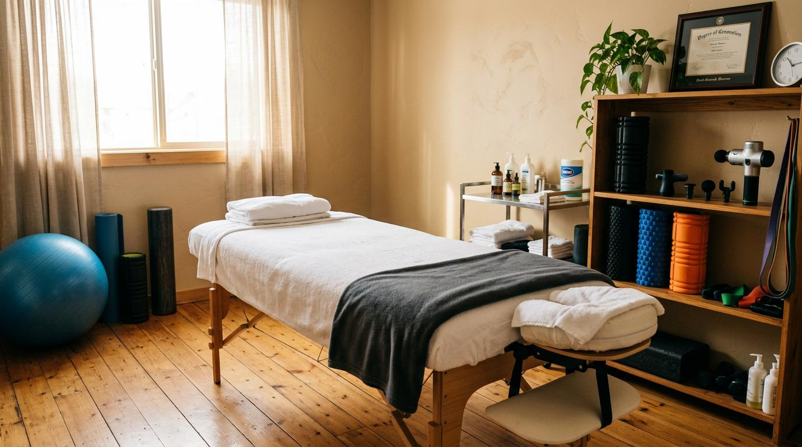

在台北搜尋台北男士按摩推薦時，面對眾多選項常不知從何篩選。本文從工作型態對身體的影響出發，說明常見服務項目、預約流程、價格比較與店家選擇方法，幫你做出判斷。
為什麼男士會選擇按摩服務？
不同工作型態對身體造成的負擔各異。辦公桌前的固定姿勢讓肩背區域長時間承受靜態壓力，每天重複這樣的動作模式，肌肉緊繃逐漸累積。長時間開車的人則因為握方向盤的姿勢，肩頸與手臂的肌群持續處於緊繃狀態。
規律運動的人也會遇到類似狀況。運動訓練後部分肌群處於高度緊繃狀態，若沒有適當處理，可能影響後續的運動表現與日常活動。這些來自工作與運動的身體訊號，讓許多人開始考慮將按摩納入日常安排。
台北男士按摩推薦常見服務項目
以下是男性較常選擇的按摩項目說明：
- 肩頸按摩：針對肩頸肌肉緊繃，適合長時間使用電腦或開車後感到肩頸僵硬的人。
- 背部按摩：針對背部肌群，適合久坐或需要久站工作的人，處理背部大範圍的肌肉緊繃。
- 全身肌肉按摩：針對多部位肌群，涵蓋肩頸、背部與四肢，適合想進行整體肌肉處理的人。
- 運動後肌肉按摩：針對運動後較為緊繃的特定部位，適合規律運動後需要肌肉恢復的人。
- 久坐族肩背按摩：針對肩背區域，聚焦辦公族群長時間維持固定姿勢所造成的肌肉緊繃。
台北男士按摩服務流程怎麼安排？
- 線上或電話預約：透過官網表單、電話或官方通訊軟體聯繫，說明需求與時段。
- 確認服務項目與時段：與服務方確認按摩種類、時間長度與費用。
- 確認地點：門市按摩需確認店址；到府按摩需提供詳細地址。
- 服務前簡單溝通：按摩師會詢問身體狀況與需要特別注意的部位。
- 服務後保養建議：結束後可能獲得日常保養建議，例如適當休息與日常伸展。
台北男士按摩價格通常怎麼看？
按摩價格主要受兩個因素影響。一是時間長度，常見的 60 分鐘、90 分鐘與 120 分鐘對應不同價位。二是服務項目，全身按摩因涵蓋範圍較廣，價格通常高於單一部位的按摩。到府與門市的費用結構也不相同，到府需額外支付交通相關費用。

如何挑選適合的按摩店家？
面對眾多選項，以下標準可供篩選參考：
| 挑選標準 | 檢查方式 | 注意事項 |
|---|---|---|
| 價格明確 | 預約時詢問總費用 | 確認是否有隱藏費用 |
| 預約管道 | 是否有電話/網站等標準管道 | 避免非標準聯繫方式 |
| 服務項目 | 官網是否有完整列表 | 了解每個項目包含內容 |
| 服務說明 | 流程與注意事項是否公開 | 資訊越完整越有保障 |
| 網站資訊 | 是否有完整官網 | 包含項目、價格、聯絡方式 |
| 消費評價 | 查詢Google評論等管道 | 觀察評價內容是否具體 |
到府按摩與門市按摩有什麼差別？
| 比較項目 | 到府按摩 | 門市按摩 |
|---|---|---|
| 交通 | 按摩師前往指定地點 | 客戶自行前往門市 |
| 環境 | 在客戶指定空間進行 | 固定空間與標準設備 |
| 費用 | 通常含交通費 | 無交通費 |
| 適合對象 | 不便出門、時間緊湊者 | 喜歡固定環境與設備者 |
預約前需要注意哪些事項？
- 確認想預約的按摩項目：了解每個項目涵蓋的部位與時間長度。
- 確認總費用：包含基本費用與可能的交通費等額外費用。
- 確認服務時間與地點：門市地址或到府的具體時間與地點。
- 確認到府服務的涵蓋區域：並非所有區域都提供到府服務。
- 如需更改請提前通知：臨時變動可能影響服務安排。
- 特殊身體狀況請事先告知：讓按摩師評估是否適合進行按摩。
選擇按摩服務的重點整理
按摩項目與適合對象在服務說明頁面有詳細描述，可依自身需求挑選。金手指按摩在官網列出所有服務項目、價格與預約方式，預約時可一併確認時段與地點。建議先評估自己的身體狀況與時間安排，再選擇適合的項目。
常見問題
台北男士按摩推薦怎麼選？
可參考價格是否明確、是否有標準預約管道、服務項目是否清楚說明、網站資訊是否完整，以及其他消費者的評價內容。
台北男士按摩價格怎麼看？
價格受時間長度、服務項目、到府或門市等因素影響。建議預約前確認總費用，並了解是否有額外費用。
台北男士按摩評價怎麼看？
可透過 Google 評論或相關論壇了解其他消費者的回饋。注意觀察評價內容是否具體，以及服務方對負評的回應方式。
到府按摩和門市按摩有什麼差別？
到府按摩節省交通時間，適合不便出門的人；門市按摩有固定環境與標準設備。可依時間、地點與預算選擇。
運動後可以安排按摩嗎？
可以。運動後進行肌肉按摩有助於緩解肌肉緊繃。建議選擇運動後肌肉按摩項目，並事先告知按摩師運動類型。
標籤： 台北男士按摩推薦按摩推薦怎麼選按摩店家選擇按摩評價全身按摩